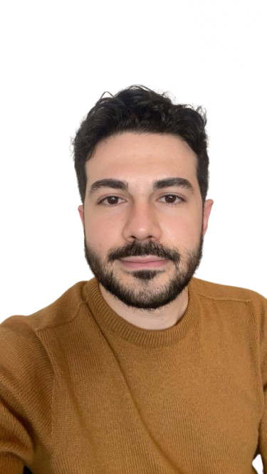

Osman Melih Cabik
Technical Product Manager & Educational Technologist
Saarbrücken, Germany

About Me
I am a motivated M.Sc. student in Educational Technology at Saarland University with a strong foundation in product management and digital learning design. Experienced in collaborating with cross-functional engineering teams, designing user-centric workflows, and creating engaging interactive content. Eager to bring my technical skills and collaborative mindset to a working student (Werkstudent) role, helping teams deliver outstanding digital products.
Interactive Project Showcases
Case Study: EduCon (EducationApp) — Google AI Academy
Osman Melih Cabik, Google AI Academy Tech Team
Google AI Academy (2023)
A deep dive into the technical architecture and product design of EduCon, a cross-platform application developed during the Google AI and Tech Academy. The product bridges advanced software development workflows with user-centered instructional delivery.
// System Architecture & Technical Integration Details:
The EduCon platform was structured as a modern cross-platform application relying on Flutter's Declarative UI. We integrated strict MVVM state architecture to isolate local business logic from the view layer, reducing state leakage and improving widget redraw performance.
The backend utilized Firebase Firestore with real-time listeners to stream updates to client devices, combined with custom Security Rules to protect user-generated education metrics. DevOps practices included automated CI/CD flows utilizing GitHub Actions to package Android artifacts on tag releases.
Work Experience
Founder & Product Manager — Land of Chasers
10/2022 - 01/2026- Led the end-to-end product lifecycle for an interactive gamified system, driving the technical roadmap and aligning it with international investor scales (WePlay Ventures, SKALE).
- Engineered data-driven user retention strategies using advanced behavioral analytics, successfully achieving a 30% increase in active user engagement.
- Oversaw software architecture using C++, Python, and TypeScript; automated data pipelines and core system logic.
- Produced high-fidelity video tutorials, interactive learning assets, and multimedia content using Camtasia and Premiere Pro, significantly optimizing digital product experiences and minimizing cognitive load.
- Analyzed user interaction patterns and navigation behavior within LMS environments to continuously optimize user workflows and platform usability.
Product Owner Trainee — Google AI Academy
11/2022 - 07/2023- Led cross-functional engineering and design teams to deliver EduCon, an AI-integrated educational platform optimizing digital learning paths.
- Utilized Flutter framework and Firebase to architect scalable cross-platform solutions, optimizing data quality and system metrics.
- Managed the complete Agile sprint lifecycle (Miro/Jira/Confluence) from data conceptualization to the automated delivery of the MVP.
- Optimized platform architecture and e-learning UX/UI through human-centered research and cognitive load analysis to enhance instructional effectiveness.
Instructional Designer & E-Learning Developer — ESSA Classroom Platform
01/2021 - 09/2021- Co-founded and scaled an AI-integrated digital platform to 1,000+ active users within 30 days, managing end-to-end product metrics and system environments.
- Developed multilingual e-learning scaffolds and interactive multimedia materials using Articulate 360, tailoring content to corporate and educational needs.
- Spearheaded iterative UI/UX development and user testing, ensuring highly accessible, intuitive user interactions and workflows within digital learning spaces.
- Recognized as an EdTech Finalist at TEKNOFEST 2021 for delivering innovative approaches to digital instructional design and remote e-learning infrastructure.
Education
Universität des Saarlandes
2025 - PresentCurrent GPA: 1.7/1.0 • Focus on Learning Analytics, Affective AI, Multimodal Data Processing, and Human-Computer Interaction (HCI).
Istanbul University-Cerrahpasa
2018 - 2022Final Grade: 3.64/4.0 (~1.36 German Grade equivalency) • Focus on interactive digital applications, cognitive load balancing, and behavioral UI/UX.